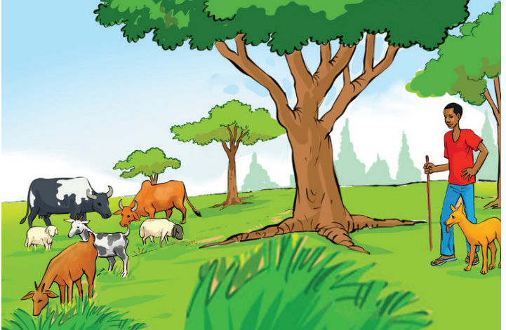

Branches of science
Activity 2
Use library or online sources to explore the branches of science.
There are different branches of science. These include Biology, Physics and Chemistry. Figure 3 shows different branches of science. Each branch deals with a specific body of knowledge.
Science
Biology
Physics
Chemistry
Biology
Physics
Chemistry
Figure 3: Branches of science
Biology is a branch of science that deals with living things. Living things include plants and animals. Figure 4 shows an environment with cows, goats, trees, grasses, a dog and a human being.

Figure 4: Living things